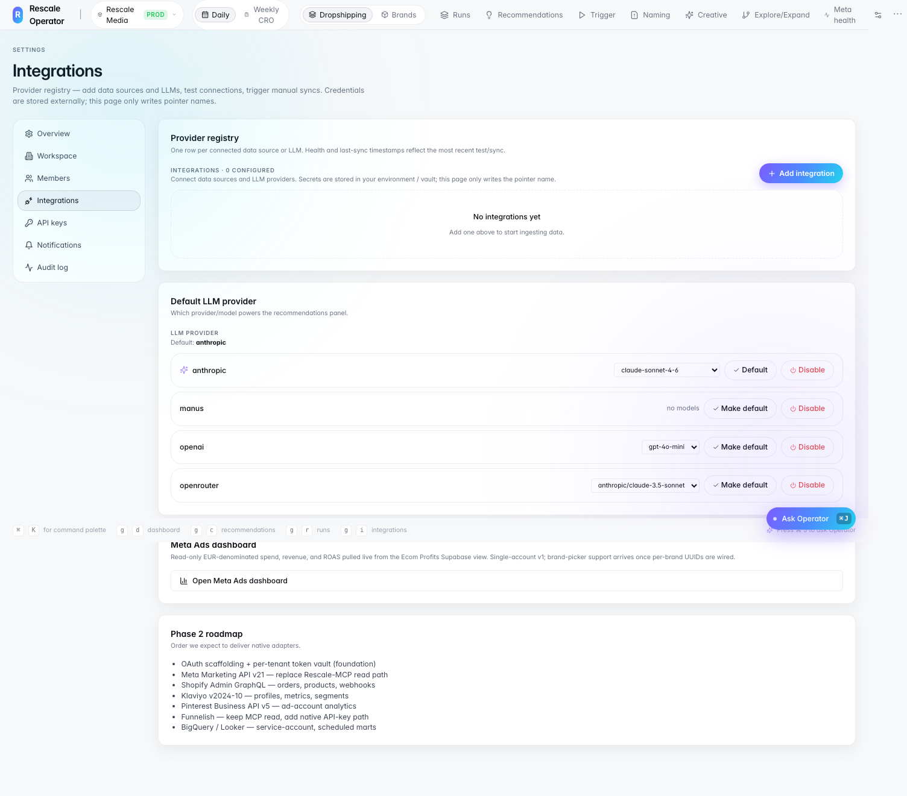
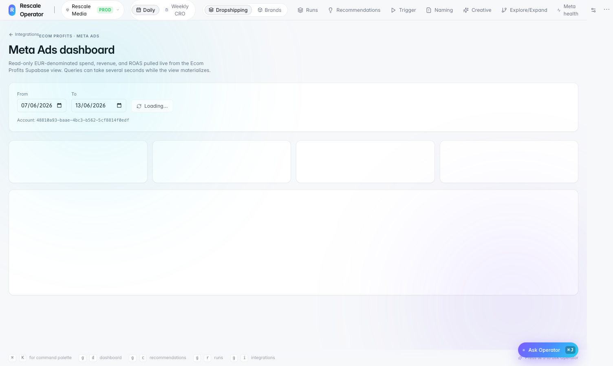
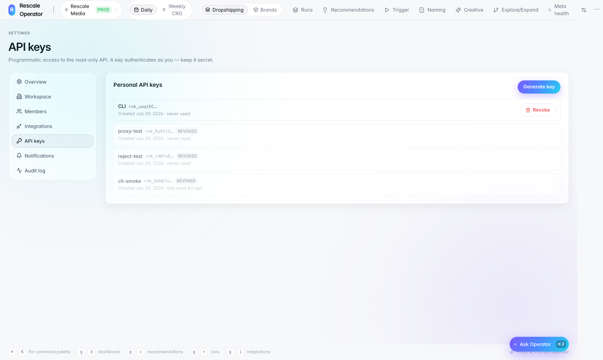
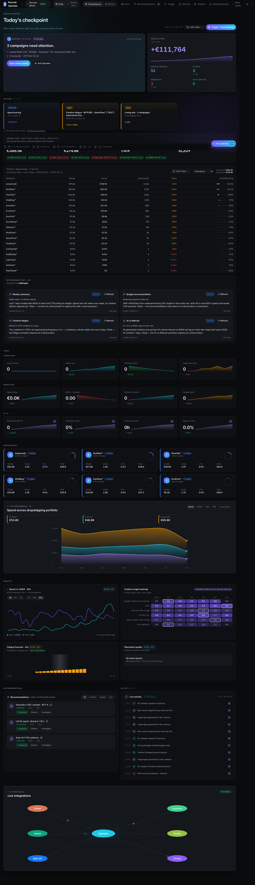
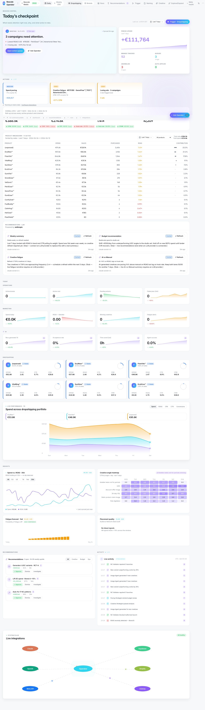
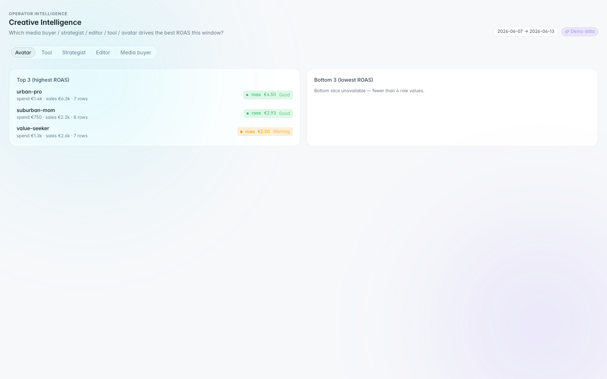
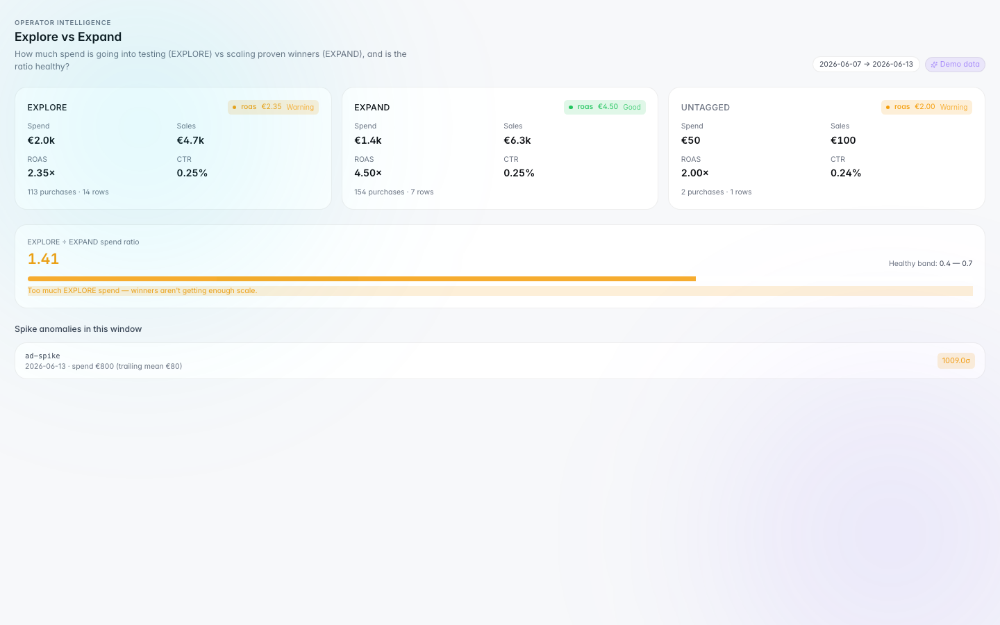
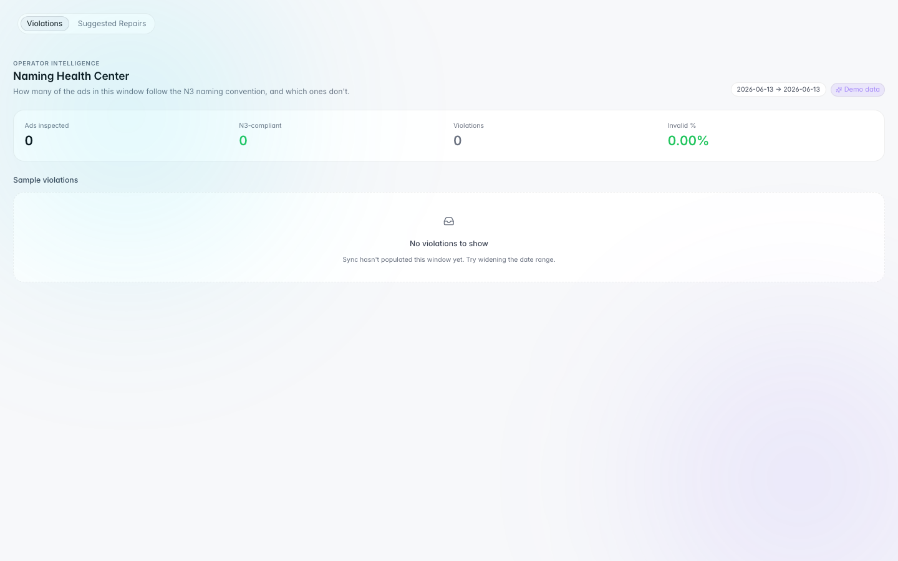
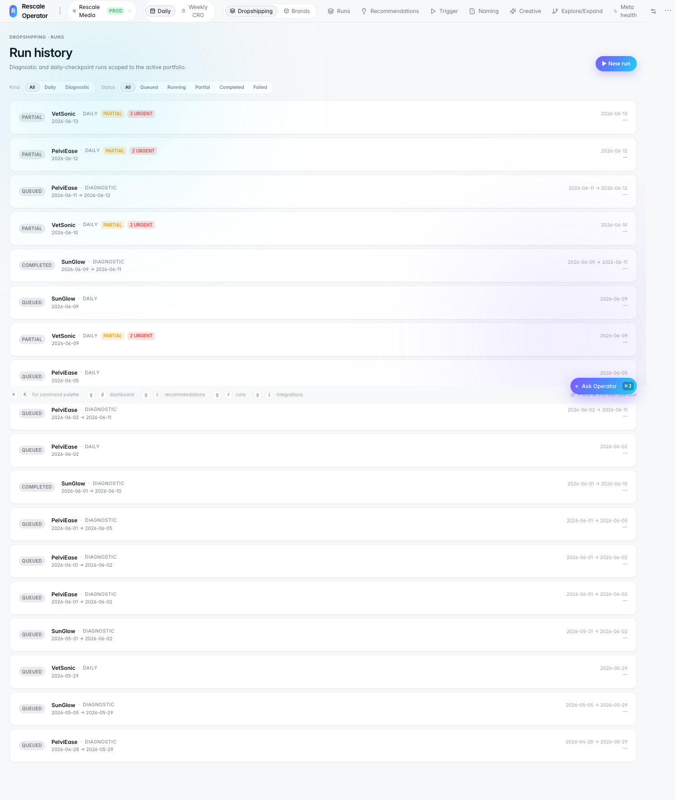
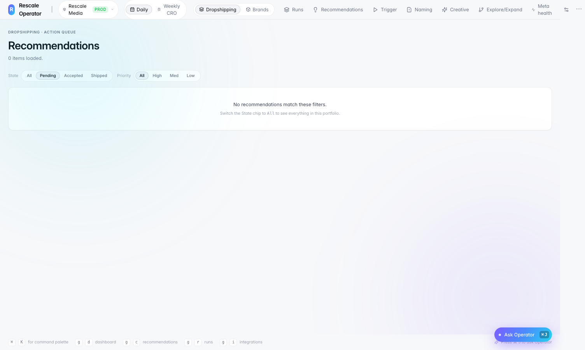

Creative workflow automation
Angle ranking, explore/expand analysis, draft concept agents, fatigue alerts.
Featured case study
AI Automation OS for Creative & Campaign Operations
An AI-powered operating system that helps creative, media buying, and operations teams manage campaign intelligence, creative signals, naming QA, winner detection, launch readiness, and daily decision workflows from one structured platform, combining AI agents, rules-based QA, dashboards, workflow automation, and human-in-the-loop review.
NEXT_PUBLIC_*)
Frontend: Next.js 15, React, TypeScript, TanStack Query, Tailwind, Framer Motion
Backend: FastAPI, Pydantic v2, Arq + Redis workers, cron fan-out (06:30 UTC)
Data: Supabase Postgres, operator DB (runs, snapshots, events, approvals); Ecom Profits read-only Meta view; Redis SSE + task registry
RAG & vector memory: Supermemory (managed vector search via /v3/search), ingest pipeline, semantic retrieval, citations + confidence scoring; gated by AGENT_RAG_ENABLED
AI & agents: Hermes Agents, OpenRouter, Claude provider, Ask Operator orchestrator (/api/agents/query), Creative Agents, diagnostic Opus synthesis
Integrations: Meta API, ClickUp API, Google Sheets API, Discord notifications, registry CRUD, OAuth, idempotent writes, System Pulse health
Quality: pytest, Vitest, Playwright e2e
Creative and campaign operations were fragmented across multiple tools, dashboards, naming conventions, creative assets, and team workflows. Teams manually reviewed campaign setup, naming errors, performance signals, launch readiness, and winner/loser decisions, creating delays, inconsistent QA, and missed opportunities to scale winning creatives.
Built Creative Marketing Agents / Rescale Operator, a workflow-driven AI automation platform that combines campaign QA, creative signal filtering, winner detection, launch checklists, intelligence screens, dashboards, and human-in-the-loop review. One agentic workflow layer instead of disconnected spreadsheets and ad-hoc checks.
Angle ranking, explore/expand analysis, draft concept agents, fatigue alerts.
Naming convention checks, launch readiness, Meta health, recommendations queue.
Daily checkpoint, winner notifier, operator queue, runs, Ask Operator.
Ad-level metrics via Meta API + Ecom Profits read-only view, N3 naming tags, explore/expand labels, role assignments (strategist, editor, avatar, media buyer).
Daily checkpoint fan-out, winner/loser classification, naming validation, launch readiness, creative intelligence ranking.
Operator queue for urgent actions. Recommendations flow pending → accepted → shipped. Creative agents output read-only drafts, buyer publishes manually.
Single decision layer with audit logs, ClickUp API tickets (URGENT/HIGH), Google Sheets API export for stakeholders, Discord winner notifications, and Ask Operator grounded in run context.
First-class adapters, not one-off scripts. Each integration has registry rows, credential pointers, test/sync endpoints, and live health in the System Pulse graph. Built for idempotent writes, audit trails, and safe partial rollout via feature flags.
Campaign intelligence pipeline reads ad-level spend, ROAS, and health signals from the Ecom Profits Meta view, with a dedicated OAuth flow for account linking.
GET /api/integrations/meta/oauth/start + callback handlermeta_ads_dashboard_view (Ecom Profits)WEBHOOKS_ENABLEDThe ClickUp Bridge is the only code path that creates tasks, idempotent hashes prevent duplicate tickets when daily checkpoint or diagnostic runs retry.
ClickUpBridge → create_task with dedup storediagnostic-run vs daily-checkpointattach_clickup_task_id stamps action queue rows after createLeadership and ops review winner signals, checkpoint outcomes, and QA results outside the dashboard, synced through the integrations registry.
POST /api/integrations/registry/{id}/sync enqueues Arq sync jobsOperational alerts when new winners emerge or high-spend ads need attention, structured notification payloads built in the winner notifier pipeline.
WINNER_NOTIFIER_DISCORD_ENABLED gate for safe rolloutWinnerNotificationPayload, new winners, emerging, high-spend non-winners
Meta API ingest → rules + agents classify signals → operator queue
(HITL) → ClickUp API tickets for URGENT/HIGH actions →
Google Sheets API stakeholder export →
Discord winner/emerging alerts. Registry CRUD at
/api/integrations/registry with per-provider test + sync.

/daily/d/settings/integrations, connected providers, health probes,
LLM selector, and Meta Ads dashboard link. Same data powers the dashboard System Pulse.
Integrations + API keys walkthrough (~25s)

From Integrations → Open Meta Ads dashboard. Read-only EUR spend,
revenue, and ROAS via Ecom Profits Supabase view (/api/meta-ads/dashboard).

/daily/d/settings/api-keys, generate, reveal-once, and revoke personal
keys for the read-only API. Prefix + last-used tracking; full secret shown only at creation.
Full-page capture and top-to-bottom scroll recording from the production UI, today's checkpoint through funnel metrics, creative heatmaps, live activity, and
integrations. Captured from the deployed Rescale Operator dashboard (/daily/d).
Dark mode scroll video (~40s)
Full-page dark screenshot

Single full-height PNG: €283K spend, 1.41× ROAS, gross profit +€111,784, 3 campaigns need attention, product breakdown, AI co-pilot cards, funnel micro-charts, brand cards, spend portfolio chart, creative heatmap, recommendations, and live integrations (Meta API, Google Sheets API, ClickUp API, Supabase, Discord, Claude).
From the shipped platform, daily checkpoint, intelligence, operator workspace, and creative agents.

Portfolio KPIs (€280K spend, 2.66× ROAS), critical alerts, product breakdown, creative angle heatmap, funnel metrics, and live activity feed.

12 open actions (9 urgent), Meta account health, billing, pixel checks across VetSonic, PelviEase, SunGlow with due dates.

Top/bottom ROAS by avatar, strategist, editor, tool, media buyer, urban-pro at €4.50 ROAS.

EXPAND at 4.50× ROAS vs EXPLORE at 2.35×, spend ratio 1.41 flagged against healthy band 0.4, 0.7.

N3 naming health center, ads inspected, compliance %, violations, and suggested repairs.

Read-only draft concepts for image ads, video ads, audience research, no Meta write API.

Daily + diagnostic runs per brand, queued, partial, completed with urgent flags.

Action queue, pending, accepted, shipped with high/med/low priority filters.
~80-second tour across dashboard modules, runs → recommendations → operator → intelligence → settings. Complements the full dark dashboard scroll above.
N3 naming health, launch readiness checklists, Meta data health, invalid pattern routing.
Daily ad classification, winner, emerging, needs watch, loser, with async worker pipeline.
Angle ranking, explore/expand balance, fatigue signals, ROAS by role and avatar.
Image, video, and research draft generation, read-only, HITL publish.
Urgent Meta health actions, open recommendations, run history, Ask Operator chat.
Accept, reject, or fix before actions ship. Full audit trail on every decision.
Outcomes from dashboard adoption, UAT, and stakeholder review, metrics visible in the platform UI and verified in production runs.
AI Product & Automation Builder, designed workflows, automation logic, QA rules, dashboard requirements, human review model, acceptance criteria, and stakeholder operating process. Shipped the full stack: FastAPI + Next.js platform, Hermes Agents + OpenRouter + Claude routing, Supermemory RAG (Ask Operator), Supabase Postgres schema, Arq workers, winner classifier, intelligence screens, and Creative Agents safety model (read-only, no Meta write API).
Owned UAT on live brands, fixed production performance issues (async 202 API, batch DB writes), and documented the operating model for creative and media-buying team adoption.
Next.js (:3100) → FastAPI (:8001) → Redis/Arq worker → Supabase Postgres (snapshots, events, runs, operator log) + Ecom Profits read-only Meta view. Redis handles async jobs, SSE run events, and multi-worker agent task registry.
Vector search is not stored in Supabase, it runs on Supermemory, a managed semantic memory service. Supabase holds relational operator data only.
supermemory_ingest.py scrubs secrets, attaches metadata (SOP, technical_doc, decision, metric_rule), idempotent custom_id → POST /v3/documentsMemorySearchService builds query + filters (project: rescale_operator, optional module) → POST /v3/search → top-k chunks with similarity scoresRagContextProvider returns context blocks, citations, confidence; degrades gracefully if Supermemory is disabled/timeout/errorAgentOrchestrator merges live dashboard context + RAG prompt block → Hermes Agents / Claude → evidence + warnings (read-only, no writes)SUPERMEMORY_ENABLED, SUPERMEMORY_API_KEY, AGENT_RAG_ENABLED; Redis-backed task registry for multi-worker /api/agents/query0026_winner_notifier)ad_launch_tracking, ad_winner_snapshots, ad_winner_events, operator runs, publish approvalsdefault_transaction_read_only = onconfig/brands.yaml/api/integrations/meta/oauth/*), Ecom Profits read-only metrics, inbound webhooksClickUpBridge idempotent create_task; URGENT daily + HIGH diagnostic tickets; clickup_task_id on action rowsWINNER_NOTIFIER_DISCORD_ENABLED/daily/d/settings/api-keysGET/POST/PATCH /api/integrations/registry, test + sync per providerDaily ad classification + dashboard card
Shipped5 morning checks → action queue
Shipped4 diagnostics + Opus synthesis
ShippedN3 health center + repairs
ShippedSupermemory vector RAG + Ask Operator
ShippedProfit Engineering workflow